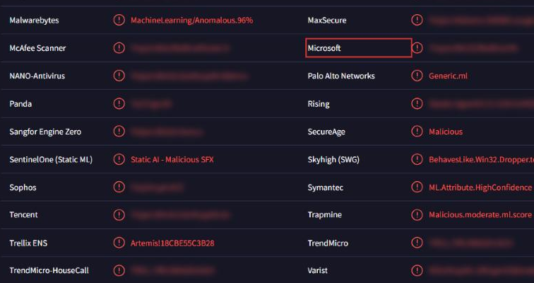
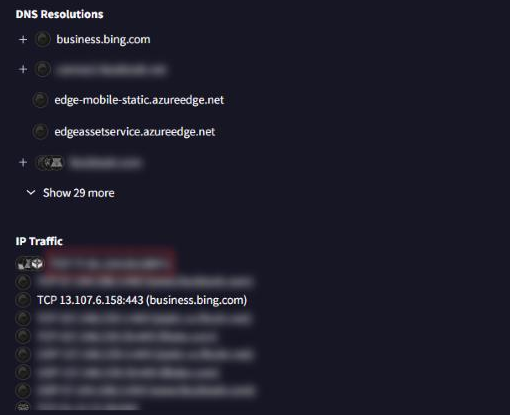

Red Stealer
- Lab: Red Stealer trên CyberDefenders. Nhóm Threat Intel, độ khó Easy, đã retired.
- Dữ liệu: thông tin định danh của một file thực thi đáng ngờ. Không có ảnh bộ nhớ hay log máy trạm, mọi kết luận đến từ dữ liệu của các nền tảng threat intel (thông tin tình báo mối đe dọa).
- Công cụ: VirusTotal (kết quả quét, chi tiết file, tab Behavior), MalwareBazaar (kết quả sandbox, luật YARA), ThreatFox và Malpedia (tên gọi khác của họ mã độc).
- Quy ước:
- Giờ trên VirusTotal là UTC. Bài không ghi giờ cụ thể vì đó là đáp án của lab.
- Ảnh chụp từ VirusTotal. Khung đỏ là chỗ cần chú ý, vùng làm mờ là giá trị trùng với đáp án hoặc để lộ đáp án.
Tóm tắt kết quả
- Mẫu là một infostealer (mã độc chuyên lấy cắp dữ liệu đăng nhập và dữ liệu cá nhân). Microsoft Defender xếp mẫu vào nhóm Trojan.
- File được ngụy trang dưới tên của một tiện ích giải nén có sẵn trong Windows.
- Theo dữ liệu sandbox, mẫu thu thập dữ liệu trên máy: thông tin phần cứng, phần mềm đã cài, mật khẩu lưu trong trình duyệt, token Discord, phiên Telegram và ví tiền mã hóa.
- Trước khi gọi C2 (máy chủ điều khiển), mẫu phân giải DNS một tên miền phổ biến để kiểm tra máy có ra Internet được không.
- Mẫu kết nối thẳng tới một IP public qua một cổng TCP cao, dùng giao thức WCF Net.TCP để gửi dữ liệu.
- Mẫu import một DLL hệ thống chứa các API điều chỉnh đặc quyền token, để xin quyền debug và đọc bộ nhớ tiến trình khác.
Bước 1: nhận diện mẫu trên VirusTotal
- Mục tiêu: biết mẫu bị xếp loại gì, tên file gốc và lần đầu xuất hiện.
- Cách làm:
- Tra mẫu trên VirusTotal, tab Detection. Xem nhãn của Microsoft.
- Mở tab Details. Xem phần tên file và mốc thời gian lần đầu được ghi nhận.

- Nhận định:
- Nhãn của Microsoft đặt mẫu vào nhóm Trojan kèm tên một họ infostealer.
- Tên file trùng với một stub giải nén của Windows. Đây là cách ngụy trang để file trông như công cụ hợp lệ.
- Hướng giải: nhóm phân loại nằm ở phần đầu nhãn của Microsoft. Tên file và mốc lần đầu xuất hiện nằm trong tab Details (mục Names và History).
Bước 2: hành vi thu thập dữ liệu
- Mục tiêu: xác định kỹ thuật MITRE ATT&CK mẫu dùng để lấy dữ liệu.
- Cách làm: mở tab Behavior trên VirusTotal, xem phần ánh xạ MITRE ATT&CK của các lần chạy sandbox.
- Nhận định:
- Mẫu đọc dữ liệu có sẵn trên máy: cơ sở dữ liệu SQLite của trình duyệt (Chromium, Gecko), token Discord, file phiên Telegram, tiện ích ví tiền mã hóa.
- Hướng giải: mã kỹ thuật nằm trong nhóm Collection của bảng MITRE ATT&CK, ứng với việc lấy dữ liệu từ chính hệ thống bị nhiễm.
Bước 3: kiểm tra kết nối mạng và C2
- Mục tiêu: tìm tên miền mẫu phân giải trước khi gọi C2, và địa chỉ C2.
- Cách làm: trong tab Behavior, xem phần Network Communication (DNS Resolutions và IP Traffic).

- Nhận định:
- Có một truy vấn DNS tới một tên miền mạng xã hội lớn. Mục đích là kiểm tra máy có ra Internet được, và né các sandbox không có mạng.
- Sau đó mẫu mở kết nối TCP thẳng tới một IP public qua một cổng cao (trên 10000). Dữ liệu được gửi bằng WCF Net.TCP với định dạng binary XML.
- Hướng giải: tên miền nằm trong danh sách DNS Resolutions. IP và cổng C2 nằm trong IP Traffic, ghi theo dạng
<IP>:<cổng>.
Bước 4: luật YARA và tên gọi khác của họ mã độc
- Mục tiêu: tìm luật YARA phát hiện mẫu và tên khác mà các nguồn threat intel dùng cho họ mã độc này.
- Cách làm:
- Tra mẫu trên MalwareBazaar, xem phần YARA Signatures (tên luật và tác giả).
- Tra họ mã độc trên ThreatFox hoặc Malpedia, xem mục alias (tên gọi khác).
- Nhận định:
- Có một luật YARA công khai phát hiện đúng họ infostealer này. Có thể đưa luật vào công cụ quét endpoint.
- Hướng giải: tên luật YARA nằm ở trang mẫu trên MalwareBazaar. Tên gọi khác nằm ở trang họ mã độc trên Malpedia hoặc ThreatFox.
Bước 5: cơ chế leo quyền
- Mục tiêu: xác định DLL mẫu dùng để xin thêm đặc quyền.
- Cách làm: trên VirusTotal, tab Details, xem phần Imports của PE (danh sách DLL và API mẫu gọi).
- Nhận định:
- Mẫu gọi các API mở token tiến trình, tra giá trị đặc quyền và điều chỉnh đặc quyền. Bộ API này dùng để bật quyền debug, từ đó đọc được bộ nhớ của tiến trình khác.
- Hướng giải: tìm DLL hệ thống chứa nhóm API xử lý token và đặc quyền trong danh sách Imports.